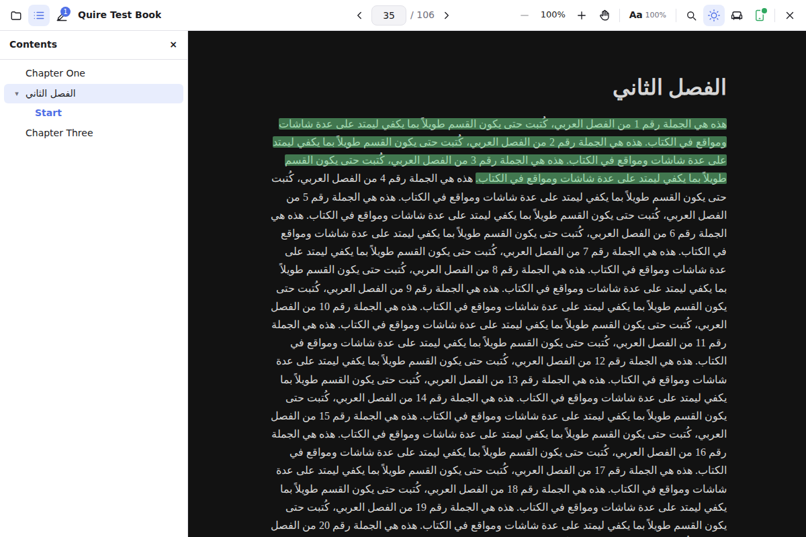
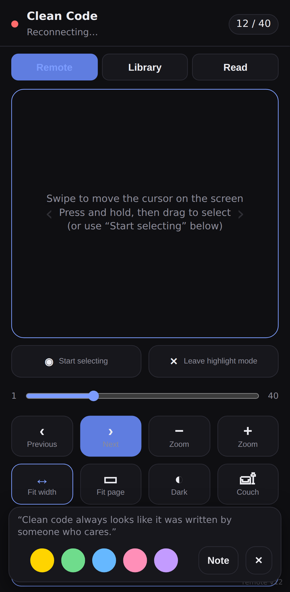
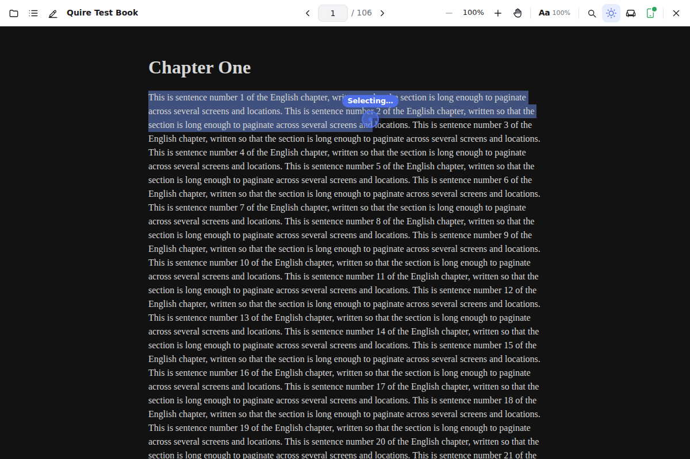
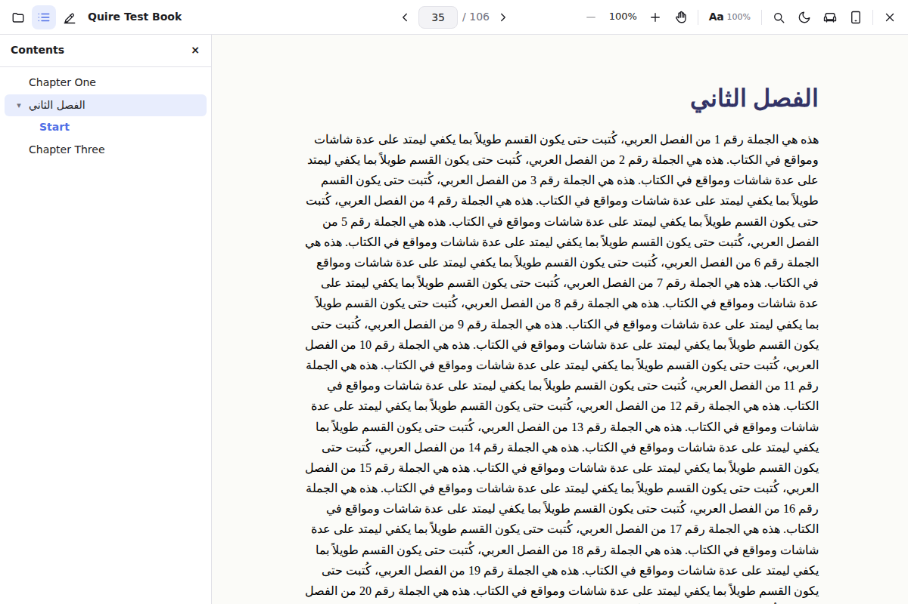

Read on the big screen.
Drive it from your phone.
Quire is a free PDF and EPUB reader for Windows. Open a book, scan a code with your phone, and turn pages, jump to chapters or highlight a sentence without leaving the couch.


A reader that stays out of the way
No accounts, no cloud, no clutter. Your books, your highlights, one folder on your computer.
PDF and EPUB
Both formats read as one long scrolling document. Zoom magnifies the page instead of reflowing it, so a map or a formula stays where you left it.
Highlights and notes
Select, pick a colour, add a note. Highlights are anchored to the text and survive font or width changes in EPUBs. Export everything as text or Markdown.
Dark mode that works
Dark mode for the interface and for the page. Highlights stay visible, images stay untouched, and couch mode makes everything bigger from across the room.
Arabic and right-to-left
RTL books, Arabic typography and mixed-direction text render the way they were meant to. Table of contents, find and locations all follow.
A quiet library
Point Quire at your folders and it keeps up with them. Covers, authors and descriptions are looked up online if you want, or not at all.
Small and fast
Built on Tauri and the Windows web engine, Quire starts in a blink and the installer is a few megabytes, not a few hundred.
The phone remote
Scan a QR code and your phone becomes a remote for the desktop, on your own Wi-Fi, with a one-time code. Nothing goes through a server.
- Turn pages and scrollSwipe on the pad, jump to any chapter or highlight, toggle dark mode or couch mode.
- Highlight without getting upA cursor appears on the desktop. Move it with your thumb, press and hold to start selecting, drag to draw the selection, then pick a colour and type a note on the phone.
- Or hand the book overOpen the book on the phone itself, at the same page, with pinch zoom and the same highlights.

Made for long books in any language
Choose the font, size, line height and column width once and every EPUB follows. Right-to-left books open on the correct side, and the table of contents, search and locations work the same in every direction.
PDFs get continuous scrolling, fit-to-width and fit-to-page, find with result highlighting, and an outline panel when the file has one.

Download
Quire is free. The installer is signed for the updater, so once installed it keeps itself up to date and tells you when a new version is ready.
Requirements: Windows 10 or 11, 64-bit. Installs for the current user, no administrator rights needed. Verify a download with certutil -hashfile Quire-Setup.exe SHA256 in a terminal and compare it with the checksum file.
Support Quire
Quire will stay free. If it earns a place on your desk, a small tip pays for the code-signing certificate and the Microsoft Store listing that will make that warning go away for everyone.